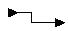

You can use a number of icons in the Block Diagram Editor to create lines that represent connectivity. These icons can be divided into two groups: those used for manual routing and those used for autorouting.
To manually or automatically route channels, use the following icons.
Table 9‑1. Block Diagram Editor Routing Icons
|
Name |
Sidebar Icon |
Element |
|---|---|---|
|
manual routing |
|
 |
|
automatic routing |
|
|